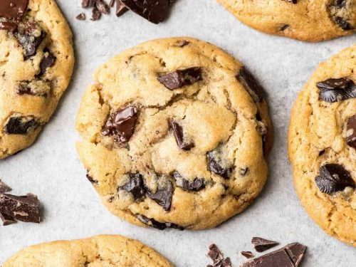

Chocolate Chip Cookies

This is a recipe for delicious chocolate chip cookies
Ingredients
- 1 1/4 Cup Brown Sugar
- 1/2 Cup Butter (I use vegan butter)
- 2 teaspoons pure vanilla extract
- 1 1/2 cups all purpose flour
- 2 teaspoons cornstarch
- 1 teaspoon baking soda
- 1/4 teaspoon salt
- 1 1/2 cups chocolate chips (I use non-dairy chocolate chips)
- 1 egg
- 1/2 Cups Walnuts
Steps:
- Preheat the oven to 350 degrees fahrenheit and line a cookie sheet with parchment paper or spray with oil
- In a large bowl using a handheld mixer or a stand mixer with the paddle attachment, beat the softened vegan butter and brown sugar for 1-2 minutes until creamy
- Add the vanilla and egg and mix to combine
- Next, stop mixing and add the flour. Spring the cornstarch, baking soda and salt on top of the flour. Turn the mixer on low speed, and mix until combined.
- Add in the chocolate chips and walnuts to incorporate, either by hand or using a mixer